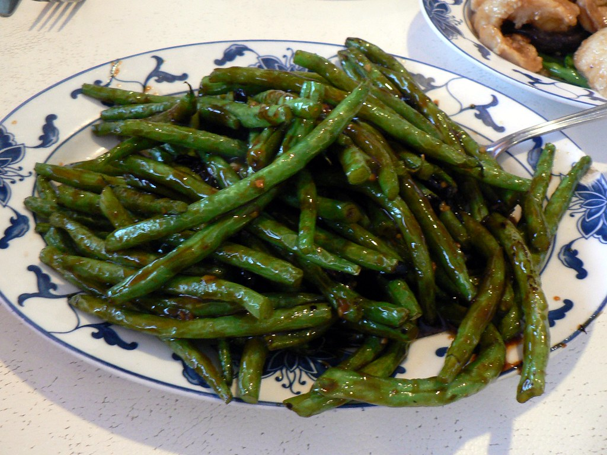

Green Beans

Description
Chinese-style green beans are a popular stir-fry dish featuring crisp-tender green beans cooked at high heat, often blistered or charred slightly for added flavor. They’re typically tossed with garlic, ginger, soy sauce, and sometimes dried chilies or ground pork for extra depth. The dish balances savory, salty, and slightly sweet flavors, and is known for its vibrant color and bold taste. It’s commonly served as a side dish in Chinese cuisine, especially in Sichuan-style cooking, where a bit of heat adds a distinctive kick.
Ingredients
- 1 tablespoon oil, peanut or sesame
- 2 cloves garlic, thinly sliced
- 1 pound fresh green beans, trimmed
- 2 tablespoons oyster sauce
- 1 tablespoon white sugar
- 2 teaspoons soy sauce
Steps
- Gather all ingredients.
- Heat oil in a wok or large skillet over medium-high heat. Stir in garlic; cook until edges begin to brown, about 20 seconds.
- Add green beans; cook and stir until they begin to soften, about 5 minutes.
- Stir in oyster sauce, sugar, and soy sauce.
- Cook and stir until beans have attained the desired degree of tenderness, 2 to 4 minutes.
Home